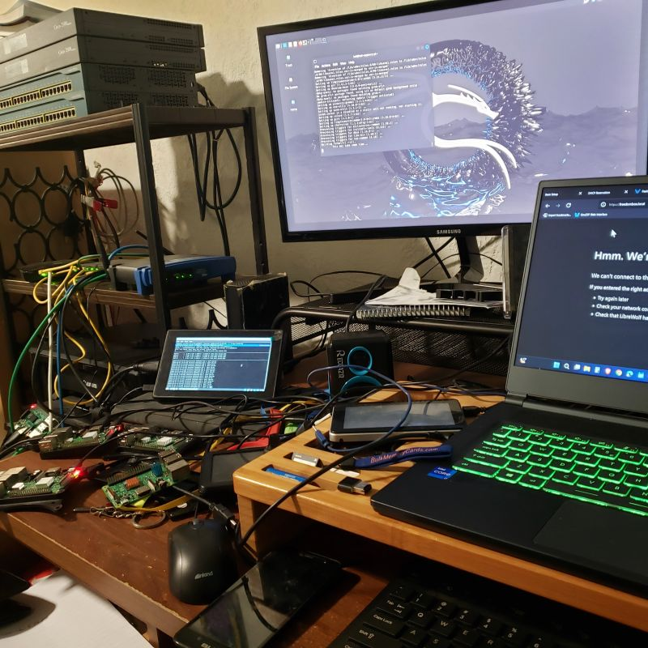

IT Infrastructure · Networking · AI Automation · Web3 & DeFi · Help Desk & Support
Building home labs, AI tools, blockchain scripts, and everything in between.
I'm an IT professional with a degree in Networking Administration and a career spanning help desk leadership, AV event production, and systems infrastructure. I've spent my life living and breathing computers — from building home labs to launching the nation's first COVID-19 crisis call center under pressure.
Recently I've been diving deep into Web Development, blockchain technology, and DeFi automation on the Sui network. My home lab runs a Pi 5 as a NAS and web server, Pi-hole for network-wide ad blocking, and a growing cluster of Raspberry Pis I break and fix daily — which is exactly how I learn.
I believe the best way to understand technology is to build something, break it, and fix it yourself. Every project teaches more than any tutorial ever could.

// home lab — cisco rack · pi cluster · networking & crypto ops
Built and deployed a flash loan arbitrage script on the Sui blockchain using Scallop Protocol. Borrows SUI, executes arbitrage logic across DEXes (Cetus, Turbos), and repays within a single atomic transaction.
Designed and built a multi-node home lab running Pi 5 as primary server with NAS (Samba), Pi-hole network ad blocking, Nginx web server, and a growing Pi cluster planned for Kubernetes (k3s).
Designed and built from scratch using HTML, CSS and vanilla JavaScript. Hosted on a Raspberry Pi 5 running Nginx on my home network. No frameworks, no templates — written line by line as part of learning web development.
Built a local AI development environment using Claude Desktop with MCP tool integrations running via Docker on Windows 11. Uses AI agents to assist with coding, file management, research, and automation — turning solo projects into AI-assisted pipelines.
Built a networked Raspberry Pi 3 mining cluster using USB Moonlander ASICs. Configured open source mining software across multiple nodes, managed the network infrastructure, and optimized hashrate performance. Also deployed XMRig on a Pi to run a Monero node — just to see if it could be done. Also maintains and troubleshoots Bitmain Antminer ASIC miners.
Spearheaded the launch of the nation's first COVID-19 crisis call center at Inktel. Designed workflow, created training materials, and deployed the entire operation under extreme time pressure at the start of the pandemic.
Providing remote help desk support, network configuration, cybersecurity consulting, and system optimisation for businesses and individuals. Specialising in Linux administration, cloud solutions, and IT troubleshooting.
Directed and mentored a team of support agents. Provided advanced troubleshooting for hardware, software, and network issues. Administered Active Directory for domain-level support. Launched the nation's first COVID-19 crisis call center.
Directed all AV operations for meetings, conferences, and large-scale events. Supervised and trained AV technicians. Managed inventory and collaborated with event planners to deliver tailored technology solutions.
Delivered technical support across hardware, software, and network environments. Handled escalations and maintained high customer satisfaction across diverse client environments.
Open to remote, hybrid, or on-site opportunities. Available for IT roles, Web3 development, AI automation projects, freelance work, and interesting conversations about tech, DeFi, and home labs.